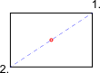

Stred(1/2) medzi 2 bodmi
Panel s nástrojmi / ikona:


Ponuka: Prichytávanie > Stred(1/2) medzi 2 bodmi
Skratka: S, N
Príkazy: snapmiddlemanual | sn
Panel s nástrojmi / ikona:


Ponuka: Prichytávanie > Stred(1/2) medzi 2 bodmi
Skratka: S, N
Príkazy: snapmiddlemanual | sn
Tento nástroj vám umožňuje prichytiť sa k bodu, ktorý je v strede medzi dvomi bodmi. Toto sa najčastejšie používa na prichytenie k stredu obdĺžnika alebo mnohouholníka výberom dvoch diagonálne protiľahlých rohov.
